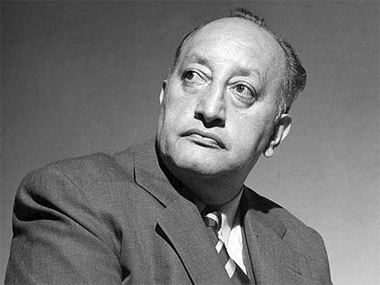

Miguel Ángel Asturias
Nacido en 1899 en Guatemala y fallecido en 1974 en Madrid,Miguel Ángel Asturias es el escritor guatemalteco más conocido y
de obra mejor divulgada internacionalmente.
Ante todo cabe observar la coherencia de su recorrido humano y literario,
pues toda su producción está dominada por dos impulsos:
la reivindicación del ciclo cultural prehispánico y una defensa sostenida de principios propios de la izquierda,
que por otro lado gozó de especial predicamento entre los defensores
del socialismo real y le sirvió para merecer el Premio Lenin en 1966.
En el terreno literario, hay que añadir, al citado binomio de intereses, el concurso del surrealismo,
patente mientras el escritor complacía su curiosidad en Francia.
Dos personajes figuran con especial intensidad en esta etapa concreta de su vida:
Georges Raynaud y J. A. González de Mendoza. Por lo que concierne a los
honores que mereció, conviene resaltar el hecho de que fuera embajador de su país en Francia
y la concesión del Premio Nobel de Literatura en el año 1967.
En el costado más dramático, sobresale su exilio, ligado a los vaivenes políticos sufridos por su patria. Al decir de Luis Cardoza y Aragón, el perfil de Asturias atraía: era el perfil de Guatemala,
el perfil del dios del maíz, y, sin duda, esa estampa se corresponde con sus afanes literarios.
De su currículo poético suelen citarse títulos como Sien de alondra (1948),
Ejercicios poéticos en forma de soneto sobre temas de Horacio (1952)
y Clarivigilia primaveral (1956). Más apegadas al terreno que le vio nacer,
obras narrativas como Leyendas de Guatemala (1930) y Hombres de maíz (1949)
figuran entre lo mejor de su trayectoria. En el mismo plano hay que situar la novela El señor Presidente (1946),
impresionante reflejo de un régimen dictatorial, emparentado con el Tirano
Banderas de Ramón del Valle-Inclán. A la hora de revalorizar su prosa,
figuran en primer término textos como El alhajadito (1961),
Mulata de tal (1963) y El espejo de Lida Sal (1967).

Me gustaría que vieras algunas de las obras de Miguel Ángel Asturias ¡Son increíbles! ¿Te gustaría conoerlas?